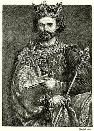

Visegrádi királytalálkozó és I. Károly külpolitikája:
-I.Károly megkísérelte visszaszerezni az Árpádházi tartományokat.
-Kiterjesztette befolyását a Duna melletti területeken.
-Hadjáratot indított a Havasalföld ellen 1330-ban,amely sikertelen volt.
-I.Károly próbált jó kapcsolatot ápolni a szomszédos országokkal.
-Felesége a lengyel Lokietek Ulászló lánya Lokietek Erzsébet.
-1335-ben visegrádi király találkozón megbékítette a Cseh és a ( Luxemburgi János) Lengyel uralkodót, amelyben a lengyelek lemondtak a csehek javára Sziléziáról.
-Visegrádon Károly megállapodott a csehekkel hogy Bécset elkerülő árumegállító jog nélküli kereskedelmi utat hoznak létre, de ez meghiúsult a gazdasági valamint a földrajzi gondok miatt.
-Károly biztosította fiának, Lajosnak hogy ő fogja uralni a lengyel trónt.Kisebbik gyermeke András pedig a nápolyi trónt fogja örökölni.

Lokietek Ulászló(I. Ulászló)
I. Ulászló (ismert ragadványnevén Kis Ulászló, lengyelül: Władysław I Łokietek; 1261 körül – Krakkó, Lengyel Királyság, 1333. március 2.), a Piast-ház kujáviai ágából származó lengyel herceg, I. Kázmér kujáviai herceg és Opolei Eufrozina fia, aki Lengyelország fejedelme 1306-tól, majd hosszú idő után a lengyel királyi cím birtokosa 1320-tól 1333-as haláláig. Lengyelország újraegyesítőjeként tarják számon. Mazóviai Konrád lengyel fejedelem unokája.
Lokietek Erzsébet
Łokietek Erzsébet (ismert még mint Lengyelországi Erzsébet, lengyelül: Elżbieta Łokietkówna; 1305 – 1380. december 29.), a Piast-házból származó lengyel királyi hercegnő, házassága révén Magyarország királynéja 1320 és 1342 között. Károly Róbert hitveseként a 14. századi magyar politikai és kulturális élet meghatározó szereplője. Erzsébet volt Łokietek Ulászló lengyel király és Kaliszi Hedvig királyné egyik leánya, egyben Nagy Kázmér lengyel király testvére. Gyermekei között van a későbbi Nagy Lajos magyar király, valamint unokái között Mária magyar királynő és Szent Hedvig lengyel királynő.
Luxemburgi János
Luxemburgi János (ismert még mint Csehországi János, ragadványnevén Vak János, 1296. augusztus 10. – 1346. augusztus 26.), a Luxemburgi-házból származó királyi herceg, VII. Henrik német-római császár és Brabanti Margit királyné elsőszülött fia, aki Csehország királya 1310-től, majd Luxemburg hercege 1313-tól 1346-os haláláig. A crécyi csatában hunyt el.
I. Lajos
I. Lajos (ragadványnevén Nagy Lajos) a Capeting–Anjou-házból származó magyar királyi herceg, Magyarország és Horvátország királya 1342-től, és Lengyelország királya 1370-től haláláig, I. Károly magyar király és Łokietek Erzsébet királyné harmadik fia. Uralkodása a középkori Magyar Királyság egyik fénykora

András calabriai herceg
András (1327. november 30. – Aversa, 1345. szeptember 18.), más néven Endre, calabriai herceg, Károly Róbert magyar király fia, I. Johanna nápolyi királynő férje
-Lokietek Ulászló: wikipedia
-Lokietek Erzsébet: wikipedia
-Luxemburgi János: wikipedia
-I. Lajos: wikipedia
-András calabriai herceg: wikipedia